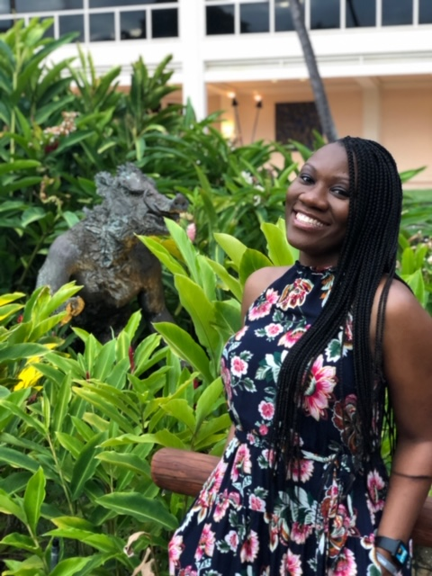

About Me
I was born and raised in Savannah, Georgia. After graduating high school I moved to Atlanta, Ga to attend Georgia State University. I received my Bachelor's of Business Adminstration in Marketing with a Certificate in Hospitality with a concentration in Tradeshow and Event Planning.
Upon graduation I began working for Schlesinger Associates, a Market Research facility. Within 4 years I achieved the role of Facility Manager before I made my exit. I went on to work for The Sherwin-Williams Company. After completing their Manager Trainee program I would go on to manage 3 differnt stores over the course of my 5 years. During this time, I received the award for Peek Performer within the NW Atlanta distrcit for 2 consecutive years and earned the Spectrum of Excellence President's Award for 3 consecutive years.
Summer of 2019 I made the decision to part ways in hopes of finding my passion. Within a week of working my last day with S-W I was accepted into the Georgia Tech Professional Education Program for their 6-month Coding Bootcamp. Now that I am here, I am anxious to see me push my limits and gain new skills as I start my journey into a new career!